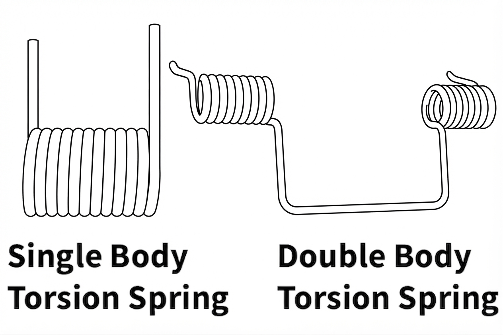
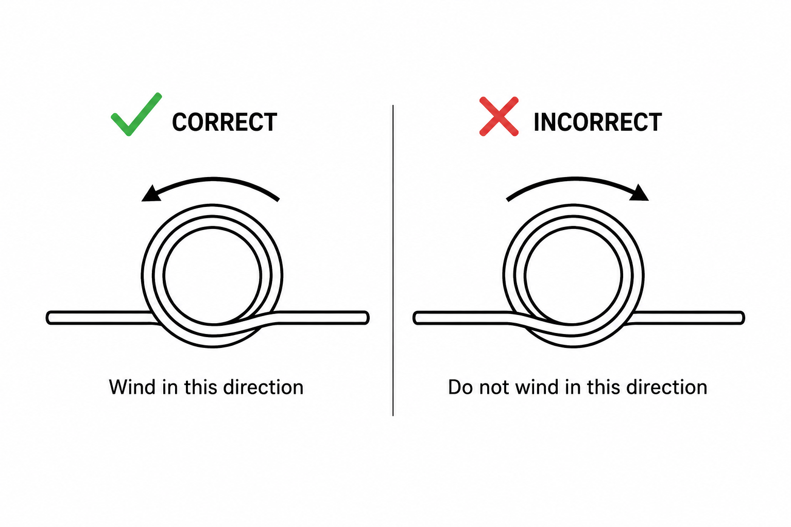
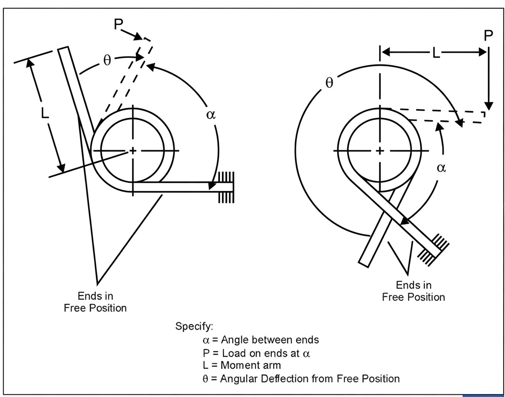
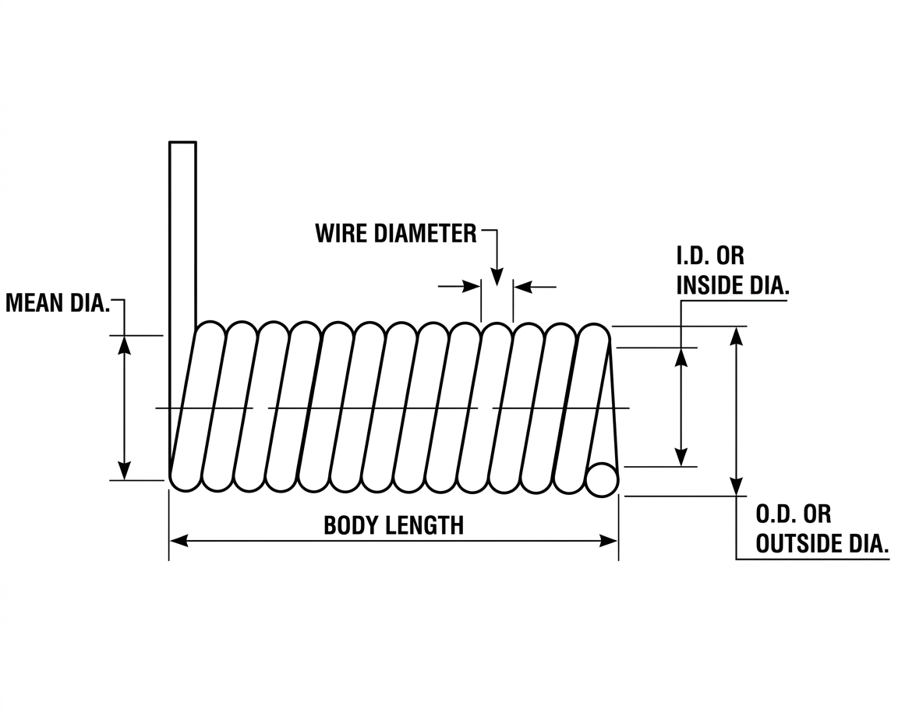
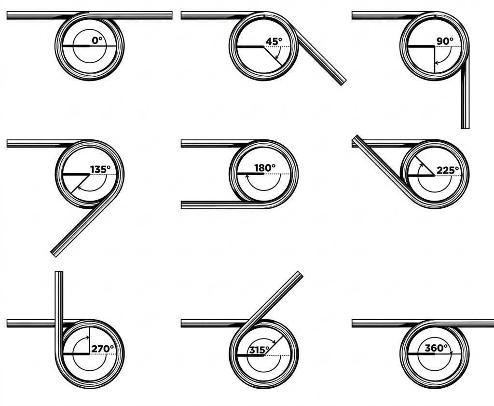
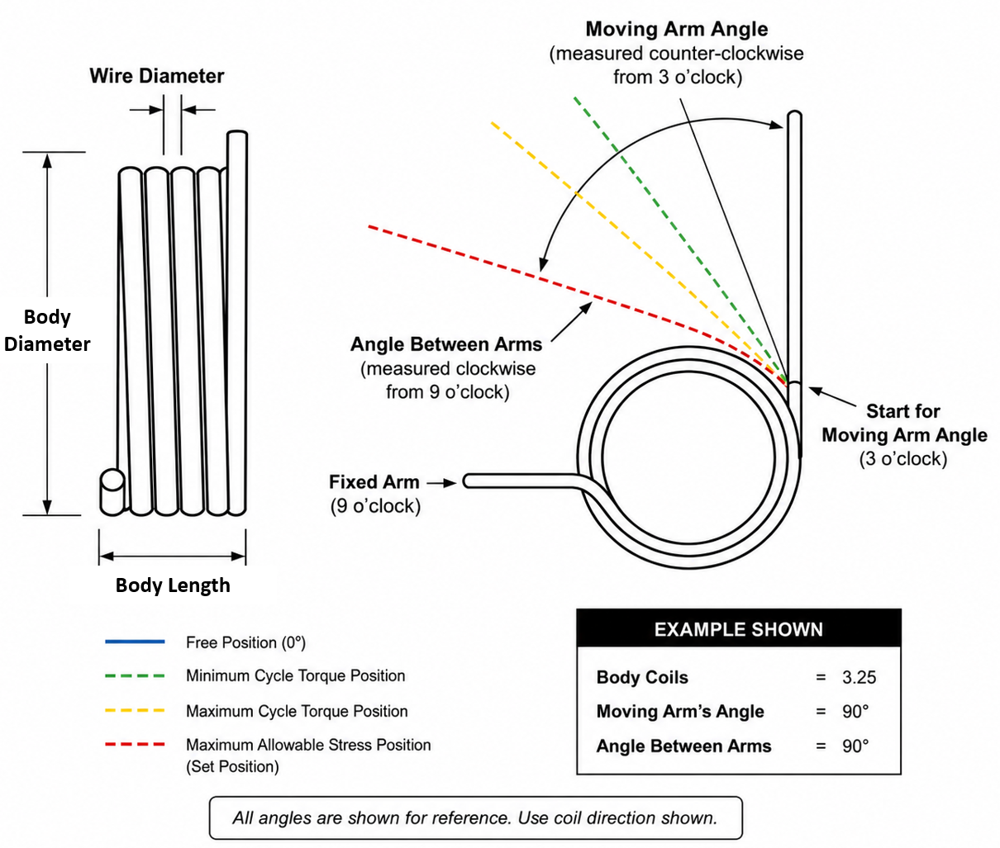
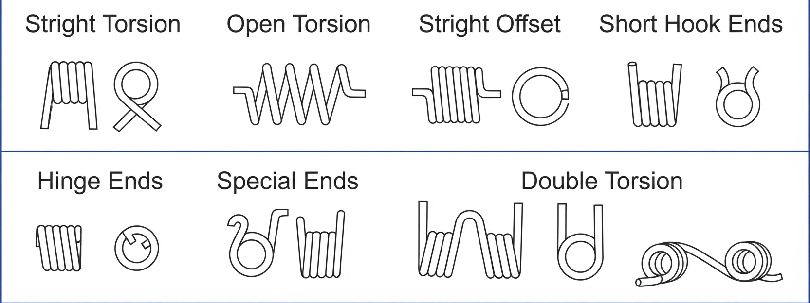
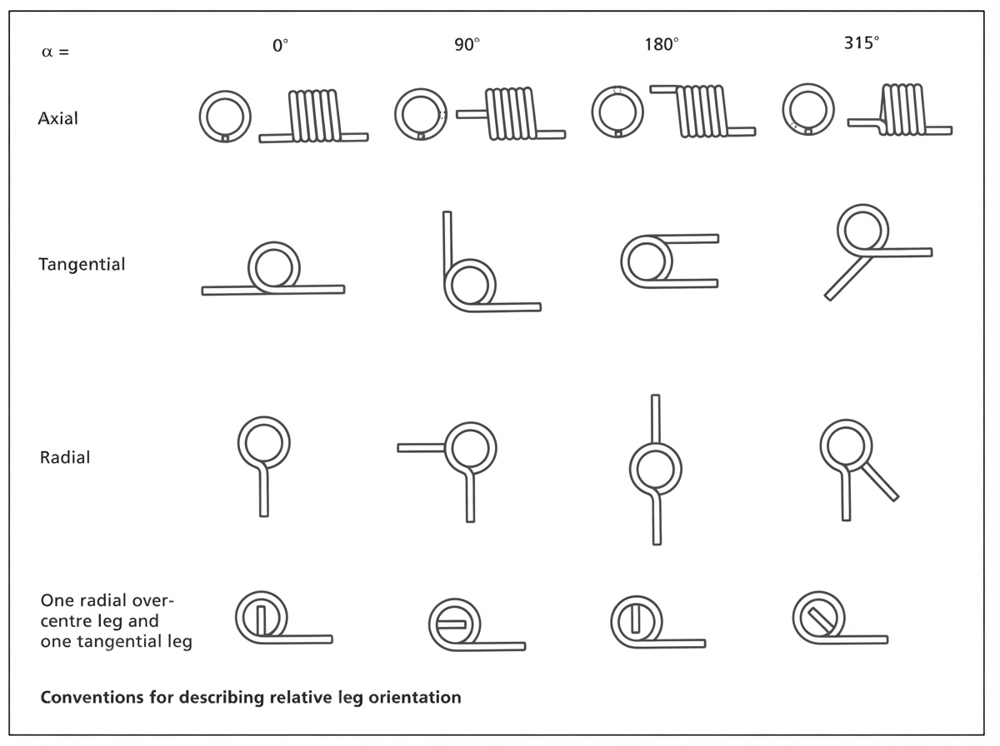
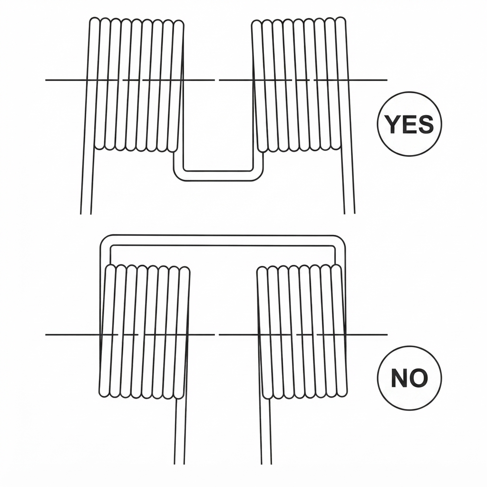
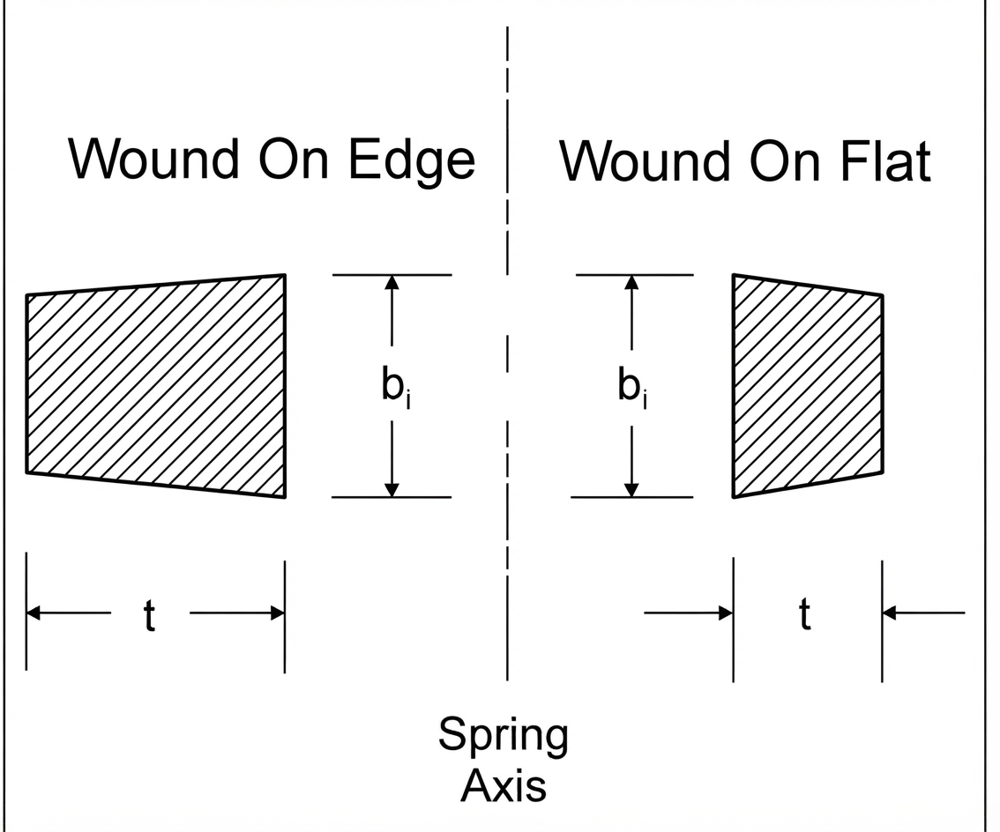

Smart Spring Calculator for Torsion Springs with Round Wire
| Parameter | Free | Minimum Cycle Torque | Maximum Cycle Torque | Other Torque | Set | Units |
|---|---|---|---|---|---|---|
| Torsional Moment | 0 | lbf-in | ||||
| Contact Force, Arm 1 | 0 | lbf | ||||
| Contact Force, Arm 2 | 0 | lbf | ||||
| Moving Arm’s Angle | deg | |||||
| Angle Between Arms | deg | |||||
| Deflection | 0 | deg | ||||
| ID Stress | 0 | psi | ||||
| OD Stress | 0 | psi | ||||
| % of Min. Tensile Strength | 0 | % | ||||
| Total Coils | ||||||
| Body Length | in | |||||
| Min. Coil ID | in |
How a Torsion Spring Carries Load
Despite the name, a helical torsion spring does not twist its wire. Wind one up and the wire is loaded in bending, exactly as a cantilever beam is. This single fact drives every equation on this page and separates torsion springs from their compression and extension cousins, whose wire genuinely is in torsion.
Two consequences follow immediately. The governing material property is the elastic modulus \(E\) rather than the shear modulus \(G\) — substituting one for the other understates the rate by roughly a factor of 2.6 in steel. And the allowable stresses are bending allowables, which run considerably higher as a fraction of tensile strength than the torsional allowables used for compression springs.
You will find these springs anywhere a part needs to be pushed back toward a rest position through an arc: clothespins, window shades, ratchet pawls, counterbalanced lids, and hinges of every description. They also serve as compliant couplings between shafts running in line, such as between a motor and the pump it drives.
Rectangular wire stores more energy per unit volume in bending than round wire does, so on paper it is the better choice. In practice round wire wins nearly every time, because rectangular spring wire carries a substantial price premium and is far more troublesome to coil. Reach for rectangular wire only when the envelope genuinely forces it.

Single- and Double-Bodied Torsion Springs Image placeholder — artwork to be addedLoad a torsion spring so that winding tightens the body — that is, so the coil diameter shrinks as the spring deflects. Coiling leaves residual stresses behind, and those residuals oppose the working stress in this direction while adding to it in the other. A spring loaded to unwind is working against its own manufacturing history.

Loading Direction — Tightening vs. UnwindingThe body wants to buckle sideways under load, so it must be restrained at three points or more. In the overwhelming majority of designs this is handled by running the spring over a shaft or arbor.
Spring Rate
Rate is the torque needed to wind the spring through one unit of angle. For round wire it follows from beam bending of the coiled body:
Most shop drawings and this calculator work in torque per degree, which is the same expression with the constant scaled by 360:
Here \(E\) is the elastic modulus, \(d\) the wire diameter, \(D\) the mean coil diameter and \(N_a\) the equivalent active turns from Section 03.
Pure bending theory puts the constant at \(32/\pi \approx 10.2\). Real springs never achieve it, because torque is lost to friction in several places at once: coil rubbing against coil on a close-wound body, the bore of the spring dragging on its arbor, the outside of the body rubbing in its pocket, and the arms sliding across whatever they bear on.
The value 10.8 is an empirical allowance covering all of it. It was arrived at from measured springs rather than derived, and it holds up well for pitched bodies as well as close-wound ones — a pitched spring escapes the coil-to-coil friction but keeps every other source.
Within its working range a torsion spring is linear to a good approximation, so a single rate describes it. Departures show up at large deflections, where the body has wound down enough to change \(D\) appreciably — see Section 05.

Specifying Load and Deflection α = angle between ends · P = load on ends at α · L = moment arm · θ = angular deflection from the free positionNo industry-standard test method exists for torsion spring load. How the part will be fixtured, where the arms will be restrained, and where torque is read all change the measured answer through the friction terms above. Settle the method with your springmaker before the first sample, and record it on the drawing.
Active Coils and the Arm Contribution
The arms are not rigid. Being straight lengths of the same wire, they bend under the same load the body carries, and that bending adds to the total angular deflection. Ignore it and the spring comes out stiffer on paper than it is in hand.
The tidy way to account for it is to convert each arm into the number of body turns that would be equally compliant. For straight tangential arms, an arm contributes one third of its length:
where \(L_1\) and \(L_2\) are the moment arm lengths of the two ends.
Add that to the turns actually wound into the body to get the figure the rate equation wants:
\(N_b\) is the body turn count — what you would count looking at the coiled part.

Torsion Spring DimensionsThe relationship runs both ways. Given a target rate you can solve for \(N_a\), subtract the arm contribution, and get the body turns to specify. Bear in mind that \(N_e\) itself depends on \(D\), so when coil diameter is still floating the two must be settled together.
Arm Angles and the Free Position
Describing where a torsion spring’s arms point sounds trivial until you try to write it down unambiguously. Two conventions are needed, they are measured in opposite directions, and getting them confused is one of the easier ways to order the wrong spring.
Picture the spring as a clock face. One arm is treated as fixed, and it always sits at 9 o’clock — pointing left.
Moving arm angle is measured from the 3 o’clock position, directly opposite the fixed arm, and it sweeps counter-clockwise. So 90° puts the free arm straight up, 180° lays it parallel to the fixed arm, and 270° points it straight down.
Angle between arms starts at the fixed arm itself — 9 o’clock — and sweeps clockwise to wherever the free arm is facing. It answers the question a fitter actually asks: how far apart are these two legs?
Because the two are measured from opposite datums in opposite directions, one always follows from the other:
with \(\alpha\) the moving arm angle and \(\beta\) the angle between arms. They are two readouts of one physical fact, not two independent pieces of information.
Here is what genuinely determines where the free arm ends up: the fractional part of the body coil count. Each quarter turn of extra wire swings the free arm through another 90°.
| Body Coils | Moving Arm Angle | Angle Between Arms | Free Arm Points |
|---|---|---|---|
| 3.25 | 90° | 90° | Straight up |
| 3.50 | 180° | 0° | Parallel to the fixed arm |
| 3.75 | 270° | 270° | Straight down |
Add a quarter turn of wire and the free arm advances 90°. Note how the two columns diverge — they agree at 90° and part company everywhere else.

Arm Orientation at 3.25 / 3.50 / 3.75 Coils 3.25 coils: moving arm 90°, between arms 90° · 3.50 coils: moving arm 180°, between arms 0° · 3.75 coils: moving arm 270°, between arms 270°Suppose a drawing calls out a free arm angle of 180° and says nothing else. That single number is satisfied by a spring with 1.5 body coils, one with 2.5, one with 3.5, and so on without limit. Every one of them looks identical at rest and behaves completely differently in service, because rate falls as coil count rises.
Quoting an angle in a loaded position does not rescue the situation either. Tell someone the arm moves from 90° to 120° under load and they still cannot size the spring: the deflection might be 30°, or 390°, or 750°. The arm returns to the same clock position on every full revolution.
Spring design drawings conventionally colour the arm at each analysis position, so a single view shows the whole working range:
| Blue | Free position — no load applied |
| Green | Minimum cycle torque position |
| Yellow | Maximum cycle torque position |
| Red | Maximum allowable stress — where the spring takes a set |
Springmakers typically fold the dimensional callouts — wire diameter, body diameter, body length — into the same sheet, so one drawing documents the whole part.

Bending Stress and the Curvature Correction
Because the wire is in bending, stress comes straight from the beam formula applied to a round section:
The bare \(32M/\pi d^{3}\) term is what a straight beam would see. The factor \(K_B\) corrects for the fact that this beam is wrapped into a circle.
In a curved beam the neutral axis does not sit at the centroid. It migrates toward the centre of curvature, which crowds the bending strain onto the inner surface of the coil. The inside of the wire therefore runs hotter than the simple formula predicts and the outside runs cooler.
Wahl calculated the exact correction at the inner surface — the I.D. — of a round wire torsion spring:
with \(C = D/d\) the spring index as always. \(K_i\) is always greater than one, which is why the bore of the coil — not the outside — is where a torsion spring cracks.
For quick hand calculation, a simpler approximation is used instead, covering both surfaces:
At \(C = 9\) the approximation gives 1.094 against Wahl’s exact 1.090 — about 0.3% high, well inside the scatter of the tensile-strength data it gets checked against. This calculator applies the approximation pair: it is the industry-standard form, and it reproduces reference spring-design software to four significant figures.
There is a specific case where the correction should be dropped entirely: finding the set point of a spring that carries favourable residual stresses from forming. Yielding during coiling redistributes stress across the section far more evenly than elastic theory assumes, so the real correction collapses toward unity. Applying \(K_{B,ID}\) there would understate what the spring can take.
How the Body Moves Under Load
A torsion spring does not hold still while it works. Wind it in the tightening direction and the body draws down onto its arbor and stretches out along it. Both effects are geometric consequences of conserving wire length, and both have to be checked before the design is released.
Mean diameter is the average of inside and outside diameter. As the spring winds down it falls off according to
where \(D_1\) is the free mean diameter and \(\theta\) is the deflection in revolutions. The same wire is simply wrapped into more, smaller turns.
Most torsion springs are close-wound, so the free body length is the wire diameter times the turn count plus one. Winding adds turns, and the body lengthens to match:
Check this against whatever pocket or bracket the spring lives in, using the deflected value rather than the free one.
The shaft must stay clear of the bore at every point in the stroke, or the spring will grip it and the torque you measure will be whatever friction decides. Size the arbor against the fully deflected inside diameter, not the free one.
Two outputs above describe the deflected state directly. Maximum body length is the length the body reaches at full deflection, once the extra turns have spread it along the arbor. Minimum coil ID is the bore at that same position, after the body has wound down as far as it will go. Check the first against the pocket and the second against the shaft — the free-state values will pass when the deflected ones do not.
The friction that justifies the 10.8 rate constant also means the spring does not retrace its own curve — torque coming back is lower than torque going out. Where that loss matters, wind the body with deliberate space between adjacent coils. A pitched body gives up the coil-to-coil rubbing entirely, which is the largest single contributor on a close-wound part.
Allowable Stress — Static Service
Static allowables are quoted as a percentage of the wire's minimum tensile strength. Which column applies depends on whether the spring carries useful residual stress in the direction it is loaded — the point made back in Section 01.
| Material Group | Stress-relieved, or no residuals (apply \(K_B\)) |
Favourable residual stress (no correction factor) |
|---|---|---|
| Patented and cold-drawn carbon steel | 80% | 100% |
| Hardened and tempered carbon and low-alloy steel | 85% | 100% |
| Austenitic stainless steel and nonferrous alloys | 60% | 80% |
Maximum recommended bending stress for helical torsion springs in static service, as a percentage of minimum tensile strength.
Left column — use it whenever the body or the ends are loaded in the direction that opens up their radius of curvature, and for any spring that has been fully stress-relieved. These numbers assume you have applied the appropriate \(K_B\) from Section 04.
Right column — use it for springs that have not been stress-relieved and whose body and ends are loaded so the radius of curvature closes down. No stress correction factor here, because the spring has already yielded during forming and the section carries a far more uniform stress distribution than elastic theory would suggest.
Allowable Stress — Cyclic Service
Fatigue allowables are again a percentage of minimum tensile strength, and every figure below assumes the stress was calculated with the appropriate \(K_B\) correction applied.
| Fatigue Life (cycles) |
Music Wire & Stainless Steel (A228, 302) |
Oil-Tempered & Chrome-Vanadium (A230, A232) |
||
|---|---|---|---|---|
| Not peened | Shot peened | Not peened | Shot peened | |
| 105 | 53% | 62% | 55% | 64% |
| 106 | 50% | 60% | 53% | 62% |
Maximum recommended bending stress (\(K_B\) corrected) for helical torsion springs in cyclic service. Assumes springs in the as-stress-relieved condition with no surging. Shot peening is not achievable on every geometry.
It is common for the bending stress in the ends to exceed anything the body sees, and the ends are also where the wire has been worked hardest. Forming a sharp bend can stretch the surface or leave tool marks, and either one is a stress raiser that pulls the usable design stress below the tabulated value.
Friction concentrates trouble where the end bears on the arbor. That contact patch is frequently the single highest-stressed spot on the whole part, and it is easy to overlook because it does not appear anywhere in the rate or stress equations.
End Configurations
Straight tangential arms are the default and the cheapest, but hooks, loops, offsets and formed feet are all routine, and springmakers will produce special shapes on request.
The rule that governs the body governs the ends as well. A bend loaded so that its radius of curvature decreases carries favourable residual stress and can be worked harder than one loaded so the radius opens up. Design the ends so the working load closes them down wherever the geometry allows.
Use the same bending stress expression from Section 04 to check the ends:
with \(K_B\) evaluated on the radius of the bend rather than the coil radius.

End Configurations — Sheet 1
End Configurations — Sheet 2Remember from Section 03 that arm length feeds directly into the rate through \(N_e\). Lengthening an arm to reach a mounting point also softens the spring, so ends and rate cannot be settled independently of one another.
Resonance and Natural Frequency
Like every other spring, a torsion spring has mass distributed along a compliant member, so it has natural modes of its own and can be driven into surge. When the operating frequency approaches a natural frequency the coils begin moving independently of the applied motion, stresses climb well above the design values, and fatigue life collapses.
The defence is separation. Keep the natural frequency well clear of the operating frequency — a wide margin, not a narrow one — and consider building in initial tension to damp the response.
Two boundary conditions matter in practice: one end fixed with the other free to move, and both ends fixed.
Restraining both ends exactly doubles the frequency, which follows straight from the \(8\pi\) becoming \(4\pi\). Here \(g\) is gravitational acceleration and \(\rho\) the material density, so the radical carries units of velocity.
For steel the radical is a constant, and the equations reduce to the forms most designers actually use:
Double-Bodied Torsion Springs
A double-bodied spring is two coiled sections joined by a common centre section, and nothing about the design method changes — the equations in Sections 02 through 05 apply to each body on its own.
The assembled rate is simply the sum of the two:
Specify these springs so that both bodies are coiled outward from the middle rather than inward from the two ends. The centre section then feeds the bodies naturally, the two halves stay symmetric, and the connecting section is not left fighting the winding direction of either body.

Preferred Winding for Double-Bodied Springs Image placeholder — artwork to be addedRectangular Wire
Rectangular wire packs more energy storage into the same envelope than round wire of comparable size, which is the reason to accept its cost and its handling difficulties. Everything said about round-wire torsion springs carries over unchanged.
Coiling distorts a rectangular section. The material on the inside of the bend is compressed and thickens while the outside is stretched and thins, so a section that started as a clean rectangle emerges as a wedge — a keystone. The axial dimension after coiling can be estimated from:
Where axial length is critical, buy pre-keystoned wire. It is drawn to a wedge that squares up into a near rectangle once coiled.

Keystoned Sections — Wound on Edge and on Flat Image placeholder — artwork to be addedRate and stress take the same form as the round-wire equations, with the section properties of a rectangle substituted in:
The \(6M/bt^{2}\) term is simply \(M/Z\) for a rectangular section, consistent with the \(bt^{3}\) appearing in the rate equation above. Both hold whether the spring is wound on edge or on flat.
The curvature correction, again approximated, is a touch gentler than for round wire:
Tolerances and How to Specify
Standard tolerances exist for coil diameter and end position, and they are the right starting point. Apply them only to the dimensions that actually control how the spring functions. Every toleranced dimension on the drawing is one the springmaker has to hold and inspect, and a part covered in tight numbers that nothing depends on costs more without working better.
Tighter tolerances than standard are generally available. Ask for them where the function genuinely requires it, and leave everything else open.
A complete torsion spring callout generally covers:
- Material specification and wire diameter
- Outside or inside coil diameter, with tolerance, and which one is controlled
- Body turn count
- Torque required, and the angular position it is measured at
- Free angle between the arms
- Direction of coiling, and the direction of the working load
- End configuration and arm lengths
- Maximum body length, and the arbor size the spring works over
- Finish, and whether shot peening is required
State the loading direction explicitly. As Section 01 explained, it determines the heat treatment the springmaker applies, and it is not something they can infer from the geometry alone.
Worked Design Example
Nothing fixes the free angle yet, so choose how far the spring is wound at the closed position. Take 60° from free, giving 120° at the fully opened position.
The arbor should sit at about 90% of the inside diameter when the spring is fully wound down, so the deflected bore must be at least
Trying 0.0938″ (3/32) wire and setting the deflected mean diameter to \(0.4167 + 0.0938 = 0.5105\;\text{in}\), the free mean diameter follows from the wind-down relation with \(\theta = 120° = 0.3333\) rev.
Body turns and free diameter depend on each other, so iterate. Settling at \(N_b = 12.6\):
That matches the target, so the geometry is consistent.
Index is \(C = 0.5240 / 0.0938 = 5.59\), giving \(K_i = 1.154\).
Tensile strength at this diameter is about 234,000 psi, so the spring runs at 61% of tensile.
| Material | ASTM A229 oil-tempered carbon steel |
| Wire diameter | 0.0938″ (3/32) |
| Mean coil diameter, free | 0.524″ |
| Outside diameter, free | 0.618″ reference |
| Body turns, Nb | 12.6 |
| Arm length, both ends | 1.00″, straight and tangent |
| Spring rate | 0.0833 lbf-in/deg |
| Torque at 90° between arms | 5.0 lbf-in |
| Torque at full travel | 10.0 lbf-in reference |
| Body length, free | 1.276″ — grows to 1.307″ at full deflection |
| Arbor diameter | 0.375″ (90% of the deflected bore) |
| Design stress | 142,300 psi, or 61% of tensile |
In production the body turn count would be rounded to suit the required free angle between the arms, with the coil diameter adjusted to hold the rate.